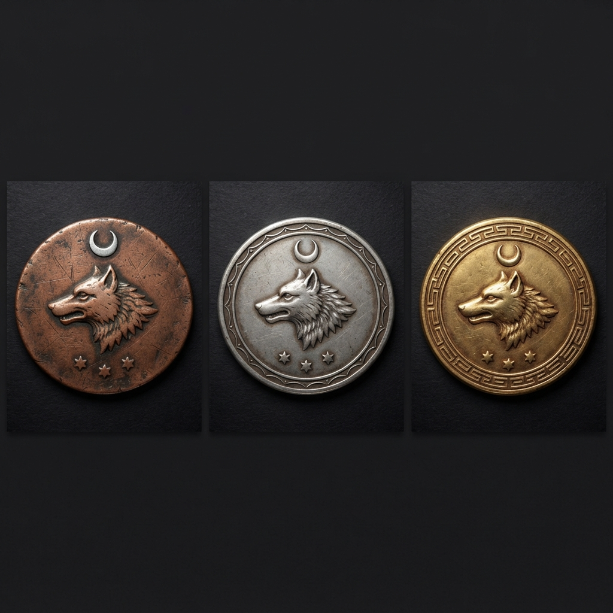

Tuanşan Beyliği Ekonomisi ve Geçim Düzeni
1326 (İşgal Sonrası)
Sikekler

1. Genel Ekonomik Çerçeve
Tuanşan, okyanus kıyısında kurulmuş genç bir koloni beyliğidir. Ekonomisi tarım, hayvancılık, balıkçılık, ada ürünleri ve Akçakale çevresindeki bronz madenciliğine dayanır. Yarımada ve adalar arasında iklim ile toprak niteliği belirgin biçimde değiştiği için, bölgeler arası deniz taşımacılığı günlük hayatın temel parçasıdır.
Silah, zırh ve özellikle büyülü eşya gibi uzmanlaşmış ürünler henüz yaygın değildir. Bu nedenle yerel ekonomi, lüks işçilikten çok gıda, hammadde, temel araç-gereç, gemi ihtiyacı ve yerel pazarlar etrafında şekillenir.
2. Bölgesel Üretim ve Geçim Kaynakları
| Bölge | Doğal imkânlar | Başlıca geçim kaynakları | Ekonomik niteliği |
|---|---|---|---|
| Kılıçay Yarımadası | Tarıma elverişli geniş araziler; yer yer bataklıklar; dağlık kuşaklar | Tarım, büyükbaş hayvancılık, dağ eteklerinde koyun ve keçi, balıkçılık | Beyliğin gıda üretim merkezi ve en büyük iç pazarıdır. Beykent’in ihtiyaçlarını büyük ölçüde karşılar. |
| Kül Adası | Bereketli, mineralce zengin topraklar; Akdeniz iklimi; merkezde tatlı su gölü | Akdeniz tarımı, narenciye ve zeytin gibi lüks ürünler, balıkçılık | Yüksek verimli tarımı, ticaret limanları ve denetimli dış ticaretiyle başlıca ekonomik merkezlerden biridir. |
| Hak Adaları | Tropik iklim, bataklıklar ve sert yamaçlar | Tropik tarım, bataklık çevresi ürünleri, balıkçılık | Üretim, ulaşılabilir kıyı yerleşimleriyle sınırlıdır; liman kasabaları dışındaki kıyılarda çıkarma yapılamaz. |
| Şehzade Adaları | Tarımsal bakımdan verimli, daha tropik iklim | Tropik tarım, balıkçılık, ada ticareti | Tarımsal ürünleri ve deniz bağlantılarıyla ticaret ağına katılır; kıyı erişimi diğer sert yamaçlı adalara göre daha elverişlidir. |
| Bergamot Adası | Daha kuzeyde; Nariniye, bergamot ve Akdeniz otlarına elverişli iklim; sert yamaçlar | Bergamot, Nariniye, aromatik otlar, balıkçılık | Baharat, koku ve seçkin mutfak malzemesi niteliğindeki ürünleriyle öne çıkar; ulaşım liman kasabalarında yoğunlaşır. |
| Karay Adası | Tarımsal verimi düşük, sınırlı ekilebilir alan ve sert yamaçlar | Sınırlı tarım, balıkçılık | Kendi ihtiyacının bir kısmını üretir; gıda ve temel ihtiyaçlarda diğer bölgelere bağımlıdır. Deniz erişimi liman kasabalarıyla sınırlıdır. |
| Akçakale | Maden damarları | Bronz madenciliği, temel maden işçiliği | Beyliğin başlıca maden üretim alanıdır; alet, inşaat gereci ve sınırlı askerî donanım için hammadde sağlar. |
3. Tarım ve Hayvancılık
Tarım
- Kül Adası, Akdeniz iklimine uygun ürünlerin başlıca üretim yeridir. Verimli toprakları, zeytin ve portakal gibi lüks kabul edilen tarımsal ürünlerin yetişmesini sağlar.
- Bergamot Adası, kuzey konumunun sağladığı iklimle bergamot, Nariniye ve Akdeniz otlarında uzmanlaşır. Bu ürünler yerel mutfak, şifa hazırlıkları, koku ve ticaret için değer taşır.
- Şehzade Adaları ve Hak Adaları, daha tropik ürünleriyle Kül Adası’nın Akdeniz tipi üretimini tamamlar.
- Kılıçay Yarımadası, genişliği ve nüfusu sayesinde temel tarımsal üretimin ana yükünü taşır. Bataklık alanlar yerleşim ve tarımı sınırlasa da çevresindeki uygun araziler üretime açıktır.
- Karay Adasında tarım vardır; ancak verim düşük olduğundan üretim ağırlıkla yerel tüketim içindir.
Hayvancılık
- Kılıçay Yarımadası’nın geniş düzlükleri büyükbaş hayvancılığa uygundur.
- Dağlık araziye yakın kesimlerde koyun ve keçi yetiştiriciliği yaygındır.
- Kümes hayvancılığı beyliğin başlıca geçim biçimlerinden değildir; yumurta ve kümes eti günlük beslenmenin ana unsuru sayılmaz.
- Hayvancılık; et, süt, deri, yün ve yük hayvanı ihtiyacını karşılamada önemlidir.
4. Balıkçılık, Limanlar ve Deniz Güvenliği
Balıkçılık, Kılıçay Yarımadası, yarımadaya bağlı küçük adalar ve diğer adaların tamamında yaygındır. Okyanus sınırında bulunan genç koloni için balık; hem ucuz gündelik besin hem de kıyı yerleşimlerinin başlıca gelir kaynaklarından biridir.
Kül Adası ve Şehzade Adaları dışındaki adaların kıyılarında sert yamaçlar bulunur. Bu nedenle liman kasabaları dışında güvenli çıkarma yapmak mümkün değildir. Bu adalarda bulunan kolluk kuvvetleri, dış istilaya karşı büyük çaplı kıyı savunması yürütmekten çok asayişi koruyacak ve siviller arasındaki anlaşmazlıkları çözecek ölçüdedir.
Kül Adası ise dış dünya ile yürütülen ticaretin denetlendiği başlıca ada merkezidir. Burada filo ile Deniz Kurtları çıkarma birliklerinden oluşan bir garnizon bulunur. Garnizon, dışarıdan gelen ve dış dünyaya giden malları sıkı biçimde denetler; limanların güvenliği ve ticaret akışının kontrolü bu gücün sorumluluğundadır.
5. Ticaret Düzeni
Ticaretin iki ana merkezi vardır:
- Kül Adası, dış dünya ile yapılan deniz ticaretinin giriş ve çıkış noktasıdır. Dış ticarete konu olan mallar burada denetlenir.
- Beykent, Kılıçay Yarımadası’nın başkenti olarak iç pazarın, yarımada üretiminin ve adalarla yapılan bölgesel alışverişin merkezidir.
Ürün fazlası olan adalar mallarını deniz yoluyla bu merkezlere taşır. Kül Adası’nın tarım ürünleri, Bergamot’un aromatik ürünleri, Şehzade ve Hak Adaları’nın tropik mahsulleri, Akçakale’nin bronz hammaddesi ve Karay’ın ihtiyaç duyduğu temel ürünler bu ağ içinde hareket eder.
6. Madencilik ve Zanaat
Akçakale’de esas olarak bronz madenciliği yapılır. Bölgenin madenleri, beyliğin temel araçları, inşaat gereçleri ve sınırlı askerî teçhizatı için hammadde sağlar.
Koloni geçmişi ve üretim ölçeği nedeniyle yerel pazarda kaliteli silahlar, karmaşık zırhlar veya büyülü eşyalar bol değildir. Bunlar varsa dahi sıradan halkın erişebileceği ürünler değildir; gündelik zanaat daha çok tarım aletleri, balıkçılık gereçleri, kap-kacak, basit bronz eşya, deri ve dokuma üzerinde yoğunlaşır.
7. Su, Kutsal Alan ve Kül Adası
Kül Adası’nın ortasındaki göl, adanın temel tatlı su kaynağıdır ve tarımsal verim ile yerleşim hayatı için stratejik önem taşır. Gölün ortasındaki volkanik ada kutsal kabul edilir. Bu kutsal ada, Tuanşan Krallığı’nın kurtuluşunu simgeler.
Göl ve çevresi yalnızca ekonomik bir kaynak değil, aynı zamanda korunması gereken dinî ve siyasal önemi olan bir alandır. Kutsal volkanik adanın gündelik üretim veya yerleşim baskısına açılmaması, Kül Adası’nın su düzeni ile inanç düzenini birbirine bağlar.
8. Para Birimi ve Gündelik Yaşam Maliyeti
Para düzeni aşağıdaki çevrimle işler:
| Birim | Karşılığı |
|---|---|
| 10 bakır | 1 gümüş |
| 10 gümüş | 1 altın |
| 10 altın | 1 platin |
Yemek ve konaklama, yeni koloni koşulları ve yerel gıda üretimi nedeniyle genel olarak ucuzdur. Aşağıdaki bedeller; sıradan bir yolcu için bir günlük sade yemek ve bir gecelik mütevazı konaklama ölçüsüdür.
| Bölge | Günlük yemek | Konaklama | Kısa not |
|---|---|---|---|
| Beykent / Kılıçay Yarımadası | 1 gümüş | 1 gümüş | Başkent pazarının genişliği fiyatları dengeler. |
| Kül Adası | 8 bakır | 8 bakır | Tarımsal bolluk vardır; liman ve garnizon talebi fiyatları tamamen düşürmez. |
| Şehzade Adaları | 7 bakır | 6 bakır | Verimli üretim ve hareketli ada ticareti. |
| Hak Adaları | 6 bakır | 5 bakır | Yerel ürünler ucuzdur; bataklık çevresinde seçenekler sınırlıdır. |
| Bergamot Adası | 8 bakır | 7 bakır | Aromatik ve seçkin ürünler fiyatı yükseltir. |
| Karay Adası | 9 bakır | 4 bakır | Konaklama ucuzdur; dışarıdan gelen temel gıda daha pahalıdır. |
| Akçakale | 7 bakır | 5 bakır | Madenciler ve geçici işçiler için sade, hesaplı hizmetler vardır. |
9. Ekonomik Denge ve Bağımlılıklar
- Beyliğin gıda güvenliği, Kılıçay Yarımadası ile Kül Adası’nın üretimine dayanır.
- Lüks tarım malları, özellikle Kül Adası’nın zeytin ve portakalı ile Bergamot’un bergamot, Nariniye ve otlarından gelir.
- Balıkçılık, bütün kıyı ve ada yerleşimlerini birbirine bağlayan ortak geçim alanıdır.
- Sert yamaçlı adalarda ulaşım ve güvenlik liman kasabalarında yoğunlaşır; liman dışı kıyılardan çıkarma yapılamaması, bu yerleşimlerin denizden erişimini sınırlar.
- Karay Adası, düşük verimi nedeniyle deniz taşımacılığına ve diğer bölgelerden gelen temel ürünlere daha bağımlıdır.
- Akçakale, bronz hammaddesi sayesinde ekonomik ve askerî açıdan stratejik önem taşır; ancak ileri nitelikli teçhizat üretimi henüz sınırlıdır.
- Ada ve yarımada ekonomisinin sürekliliği, Kül Adası’ndaki denetimli dış ticarete, Beykent’teki iç pazara ve güvenli deniz yollarına bağlıdır.
Bu belge, Tuanşan Beyliği’nin ekonomik düzeni, üretim alanları ve gündelik geçim koşullarını tanımlar.
Son güncelleme: 1326 (İşgal Sonrası)